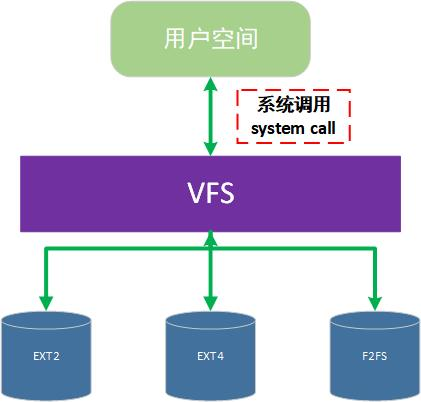
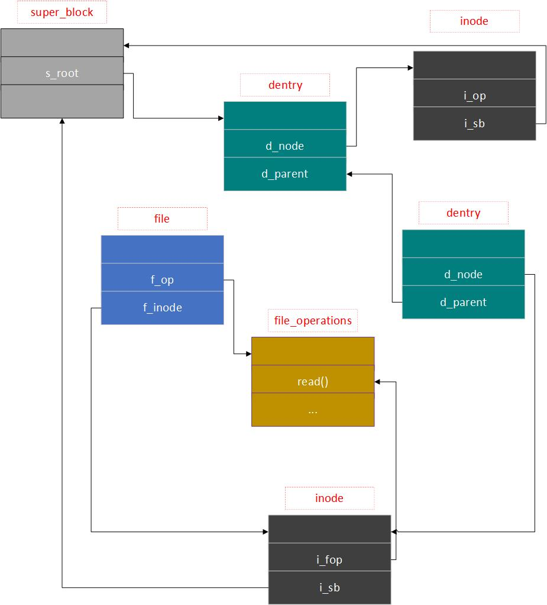

要回答为何Linux系统能够支持多种不同类型的文件系统？是怎么做到的？这就得研究一下Linux中的虚拟文件系统（简写为VFS），才能给出答案了。
虚拟文件系统（VFS） 是一个处于内核中的软件层，它的作用为：
对于用户空间的程序来说，提供文件系统接口；
对于文件系统来说，提供一个统一抽象，由具体文件系统来实现细节。

类似于面向对象思想中的接口 ，规范是已经统一的，而如何去实现规范就看各文件系统如何操作了。
1 VFS中的基本抽象数据结构
了解一个具体的模块，首先要从它实现的数据结构出发，理解了才能更好地解析其调用过程。
VFS核心的四个数据结构为：
super_block ：超级块 ，用于描述具体的文件系统信息inode：索引节点 ，用以描述一个文件的元信息，如文件大小、权限、拥有者等，每个文件均对应一个inodedentry：目录项结构 ，它的出现就是为了性能，一般在磁盘中是没有对应的结构的file：文件结构，代表与进程交互过程中被打开的一个文件
1.1 超级块 一个具体的文件系统，如ext2、ext4等，都会对应一个超级块结构。内核也是通过扫描这个结构的信息来确定文件系统的大致信息，以下为其在内核源码中的部分定义（选自Linux 5.19，后续一样）
1 2 3 4 5 6 7 8 9 10 11 12 13 14 15 16 17 18 19 20 21 22 23 24 25 26 27 28 29 30 31 32 33 34 35 36 37 struct super_block {struct list_head s_list ;dev_t s_dev; unsigned char s_blocksize_bits;unsigned long s_blocksize; loff_t s_maxbytes; struct file_system_type *s_type ;const struct super_operations *s_op ;const struct quotactl_ops *s_qcop ;unsigned long s_flags; unsigned long s_magic; struct dentry *s_root ;struct rw_semaphore s_umount ;int s_count; atomic_t s_active;void *s_fs_info; time64_t s_time_min;time64_t s_time_max;unsigned int s_max_links;fmode_t s_mode;const struct dentry_operations *s_d_op ;atomic_long_t s_remove_count;struct list_lru s_dentry_lru ;struct list_lru s_inode_lru ;struct rcu_head rcu ;spinlock_t s_inode_list_lock ____cacheline_aligned_in_smp;struct list_head s_inodes ;spinlock_t s_inode_wblist_lock;struct list_head s_inodes_wb ;
超级块的操作函数集合：
1 2 3 4 5 6 7 8 9 10 11 12 13 14 15 16 17 struct super_operations {struct inode *(*alloc_inode )(struct super_block *sb );void (*destroy_inode)(struct inode *);void (*dirty_inode) (struct inode *, int flags);int (*write_inode) (struct inode *, struct writeback_control *wbc);int (*drop_inode) (struct inode *);void (*evict_inode) (struct inode *);void (*put_super) (struct super_block *);
这些集合的函数会由具体的文件系统 进行实现，没有实现的会被置为NULL
1.2 索引节点 Linux中是视一切为文件 ，一个文件就会有对应的inode，文件包含了常规文件、目录等。在需要时，在磁盘中的inode会被拷贝到内存中，修改完毕后会被写回到磁盘中。一个inode会被指向多个目录项索引（硬链接等）
以下为它在内核中的部分源码定义：
1 2 3 4 5 6 7 8 9 10 11 12 13 14 15 16 17 18 19 20 21 22 23 24 25 26 27 28 29 30 31 32 33 34 35 36 37 38 39 40 41 42 43 44 45 46 47 48 49 50 51 52 53 54 55 56 57 58 59 60 struct inode {umode_t i_mode; unsigned short i_opflags;kuid_t i_uid; kgid_t i_gid; unsigned int i_flags;const struct inode_operations *i_op ;struct super_block *i_sb ;struct address_space *i_mapping ;unsigned long i_ino; union {const unsigned int i_nlink; unsigned int __i_nlink;dev_t i_rdev; loff_t i_size; struct timespec64 i_atime ;struct timespec64 i_mtime ;struct timespec64 i_ctime ;spinlock_t i_lock; unsigned short i_bytes; unsigned long i_state;struct rw_semaphore i_rwsem ;struct hlist_node i_hash ;struct list_head i_io_list ;struct list_head i_lru ;struct list_head i_sb_list ;struct list_head i_wb_list ;union {struct hlist_head i_dentry ;struct rcu_head i_rcu ;atomic64_t i_version; atomic_t i_count; atomic_t i_writecount; union {const struct file_operations *i_fop ;void (*free_inode)(struct inode *);struct address_space i_data ;struct list_head i_devices ;void *i_private;
索引节点的函数操作集合：
1 2 3 4 5 6 7 8 9 10 11 12 13 struct inode_operations {struct dentry * (*lookup ) (struct inode *,struct dentry *, unsigned int );int (*create) (struct user_namespace *, struct inode *,struct dentry *,umode_t , bool );int (*mkdir) (struct user_namespace *, struct inode *,struct dentry *,umode_t );int (*rmdir) (struct inode *,struct dentry *);
1.3 目录项结构 它的出现主要是为了查找性能 ，只存在于内存中，而不存在于磁盘中。这提供了一种非常快的查询机制来将一个路径名称（文件名称）转换为特定的目录项对象。
以下为它在内核中的部分源码定义：
1 2 3 4 5 6 7 8 9 10 11 12 13 14 15 16 17 18 19 20 21 22 23 24 25 26 27 28 29 30 31 32 struct dentry {unsigned int d_flags; seqcount_spinlock_t d_seq; struct hlist_bl_node d_hash ;struct dentry *d_parent ;struct qstr d_name ;struct inode *d_inode ;unsigned char d_iname[DNAME_INLINE_LEN]; struct lockref d_lockref ;const struct dentry_operations *d_op ;struct super_block *d_sb ;union {struct list_head d_lru ;wait_queue_head_t *d_wait; struct list_head d_child ;struct list_head d_subdirs ;union {struct hlist_node d_alias ;struct hlist_bl_node d_in_lookup_hash ;struct rcu_head d_rcu ;
目录项的函数操作集合：
1 2 3 4 5 6 7 8 9 10 11 12 13 14 15 struct dentry_operations {int (*d_revalidate)(struct dentry *, unsigned int );int (*d_weak_revalidate)(struct dentry *, unsigned int );int (*d_hash)(const struct dentry *, struct qstr *);int (*d_delete)(const struct dentry *);void (*d_release)(struct dentry *);void (*d_iput)(struct dentry *, struct inode *);
1.4 文件结构 当一个进程打开一个文件时，该文件就是用此文件结构进行描述的 ，如文件的读写模式、读写偏移量、所属inode等信息。这个文件结构会被进程的文件描述符表所存放。
以下为它在内核中的部分源码定义：
1 2 3 4 5 6 7 8 9 10 11 12 13 14 15 16 17 18 19 20 21 22 23 24 25 26 27 28 29 30 struct file {union {struct llist_node fu_llist ;struct rcu_head fu_rcuhead ;struct path f_path ;struct inode *f_inode ;const struct file_operations *f_op ;spinlock_t f_lock; atomic_long_t f_count; unsigned int f_flags; fmode_t f_mode; struct mutex f_pos_lock ;loff_t f_pos; struct fown_struct f_owner ;void *private_data; struct address_space *f_mapping ;4 )));
文件结构的函数操作集合：
1 2 3 4 5 6 7 8 9 10 struct file_operations {loff_t (*llseek) (struct file *, loff_t , int );ssize_t (*read) (struct file *, char __user *, size_t , loff_t *);ssize_t (*write) (struct file *, const char __user *, size_t , loff_t *);
1.5 它们的关系
很早就查过dentry、inode之间的关系了，但是过了一段时间还是会忘记它们之间的关系，这实际反映了这些关系并不是那么好去去理解的，那么在这里我就通过一张图来描述它们之间的关系。

在这张图中，需要额外的关注的是，inode、dentry、super_block之间是有链接关系的，而file并不需要跟它们之间存在链接关系的（不同的Linux的大版本会存在部分不同），构建file的方式是通过解析路径而从获得dentry、inode然后再用这些数据初始化它，具体细节可以分析文件的打开流程。
这个关系也是比较简单的，实际上inode可能会被多个dentry所指向。
2 文件系统的注册与注销 注册
前面说到VFS提供了统一的抽象接口供给具体的文件系统去实现，为了让Linux内核去发现真实的文件系统，那么就需要使用register_filesystem去注册。该函数的实现如下：
1 2 3 4 5 6 7 8 9 10 11 12 13 14 15 16 17 18 19 20 21 22 int register_filesystem (struct file_system_type * fs) int res = 0 ;struct file_system_type ** p ;if (fs->parameters &&return -EINVAL;strchr (fs->name, '.' ));if (fs->next)return -EBUSY;strlen (fs->name)); if (*p) else return res;
这个函数的实现思想也是很简单的，相当于是将当前fs加入到全局链表 中，这样当Linux启动时，会遍历所有注册过的文件系统来识别磁盘中的文件系统（根据超级块super_block的信息）。
从函数参数可以看到，这个参数类型是struct file_system_type，所有具体的文件系统都需要定义一个这样的实体,它的类型定义为：
1 2 3 4 5 6 7 8 9 10 11 12 struct file_system_type {const char *name; int fs_flags; int (*init_fs_context)(struct fs_context *); const struct fs_parameter_spec *parameters ;struct dentry *(*mount ) (struct file_system_type *, int , const char *, void *); void (*kill_sb) (struct super_block *);struct module *owner ;struct file_system_type * next ;
注销
注销这个文件系统也是相当于直接从文件系统全局列表中进行移除即可。它的函数实现如下：
1 2 3 4 5 6 7 8 9 10 11 12 13 14 15 16 17 18 int unregister_filesystem (struct file_system_type * fs) struct file_system_type ** tmp ;while (*tmp) {if (fs == *tmp) {NULL ;return 0 ;return -EINVAL;
3 总结 本文从比较简单的角度学习了Linux内核中虚拟文件系统的源码以及其核心数据结构，如果要继续剖析该模块的内容，其实还可以更深入，如发生系统调用（如read、write等）过程中VFS在此过程中如何处理的。 但理解这些深入的内容，还是回归基础，搞清楚这个基本的数据结构的定义以及它们背后隐含的关系，才能更好地去分析。
后续如果来得及的话，会继续分析这部分的内容
参考文章